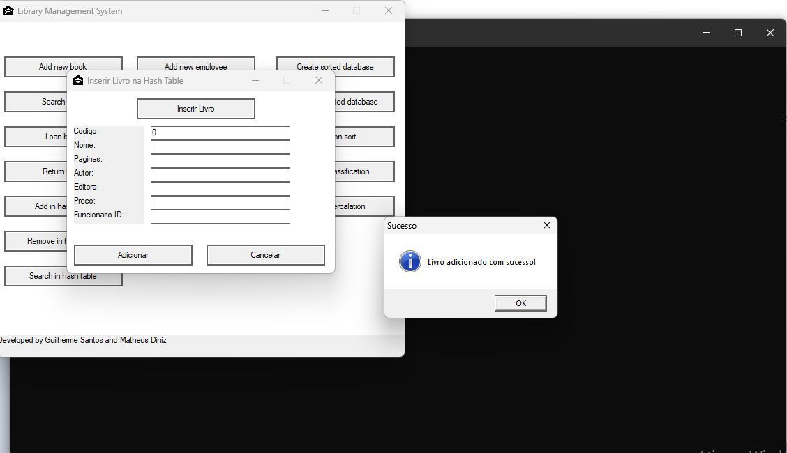
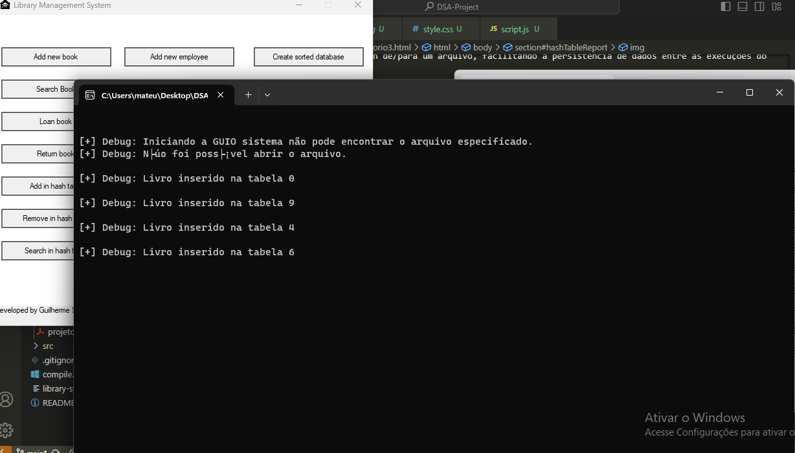
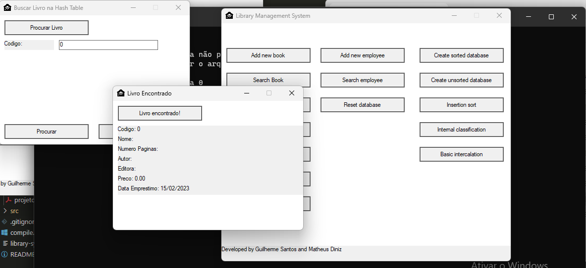
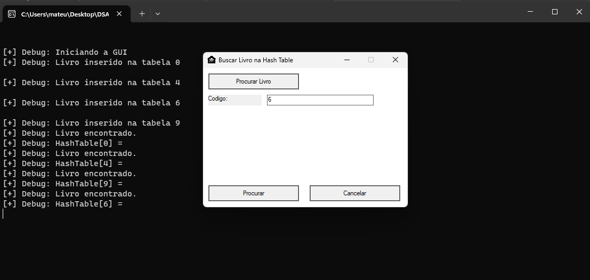
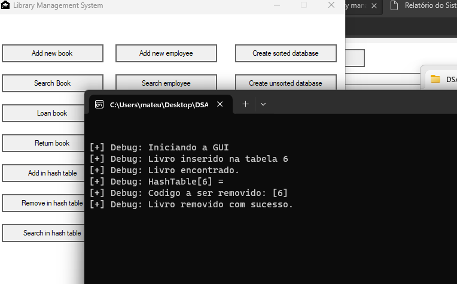
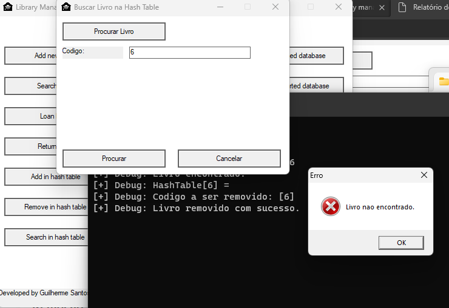

Este código implementa uma tabela hash utilizando o método de encadeamento externo para o tratamento de colisões. A estrutura permite inserir, buscar e remover registros de livros, identificados por uma chave única. Além disso, oferece funcionalidades para salvar e carregar a tabela hash de/para um arquivo, facilitando a persistência de dados entre as execuções do programa
A função hash(int key) determina a posição de um elemento na tabela hash com base no módulo da chave pelo tamanho da tabela, proporcionando uma distribuição uniforme dos elementos.
insert_hash(HashTable *ht, int key, TLivro livro) insere um novo livro na tabela. Se ocorrer uma colisão, o livro é adicionado no início da lista encadeada correspondente ao índice calculado pela função hash.


search_hash(HashTable *ht, int key) busca um livro pela chave. Percorre a lista encadeada no índice relevante até encontrar o livro com a chave correspondente, retornando-o; caso contrário, retorna um livro com código -1, indicando que não foi encontrado.


remove_hash(HashTable *ht, int key) remove um livro baseado em sua chave. Se o livro for encontrado, é removido da lista encadeada, mantendo a integridade da estrutura.


As funções saveHashTable(HashTable *ht) e loadHashTable() permitem salvar e carregar o estado atual da tabela hash em um arquivo, respectivamente.
A complexidade de tempo para inserção, busca e remoção pode variar de O(1) para casos sem colisões até O(n) no pior caso, quando todos os elementos estão encadeados no mesmo índice. A complexidade de espaço é O(n), sendo n o número total de elementos armazenados na tabela hash.
Este sistema de tabela hash com tratamento de colisões por encadeamento externo oferece uma base sólida para a manipulação eficiente de dados. Com as otimizações e uma atenção contínua à qualidade do código e testes, este sistema pode ser ainda mais robusto e versátil para diferentes aplicações.